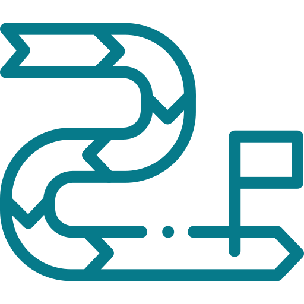

Von der Fragestellung
zur belastbaren Entscheidung.
Umsetzlogik unterstützt Unternehmen dabei, komplexe Vorhaben zu strukturieren, Optionen fundiert zu bewerten und daraus einen klaren Weg zur Umsetzung abzuleiten.
Ein gemeinsames Prinzip
Technik, Wirtschaft und Organisation
gemeinsam denken.
Technische Machbarkeit, wirtschaftlicher Nutzen und organisatorische Umsetzbarkeit werden nicht getrennt betrachtet. Entscheidend ist eine Lösung, die unter realen Rahmenbedingungen trägt.
Leistungen im Detail
Strukturierte Angebote. Klare Ergebnisse.
Digitalisierung
Von der technischen Möglichkeit zur sinnvollen Lösung.
Digitalisierung beginnt nicht mit einer Technologie, sondern mit einer klaren Fragestellung.
Mehr über DigitalisierungDigitalisierungs-Check
Wenn noch nicht klar ist, wo angesetzt werden sollte.
- Potenziale identifizieren
- Handlungsfelder priorisieren
- Erste Bewertung
- Konkrete nächste Schritte
Lösungsbewertung & Entscheidungsvorlage
Wenn mehrere Lösungswege zur Auswahl stehen.
- Optionen strukturieren
- Technik und Wirtschaftlichkeit bewerten
- Risiken und Abhängigkeiten
- Nachvollziehbare Empfehlung
Umsetzungsplanung
Wenn die Richtung feststeht, der Weg aber noch nicht.
- Anforderungen definieren
- Roadmap entwickeln
- Abhängigkeiten klären
- Verantwortlichkeiten festlegen
Prozesse
Von gewachsenen Abläufen zu klaren Strukturen.
Prozesse entstehen häufig über Jahre. Umsetzlogik schafft Transparenz und entwickelt daraus ein tragfähiges Zielbild.
Mehr über Prozesse
Prozess-Check
Für die schnelle strukturierte Bewertung eines konkreten Ablaufs.
- Ist-Bild erfassen
- Schwachstellen identifizieren
- Handlungsfelder priorisieren
- Kompakte Ergebnisdarstellung
Prozessanalyse & Soll-Konzept
Für Prozesse, die gezielt neu strukturiert werden sollen.
- Detaillierte Analyse
- Soll-Prozess entwickeln
- Rollen und Schnittstellen definieren
- Anforderungen und Maßnahmen
Umsetzungsbegleitung
Für die Überführung eines definierten Zielbilds in die Praxis.
- Maßnahmenlogik entwickeln
- Verantwortlichkeiten festlegen
- Umsetzung steuern
- Fortschritt begleiten
Business Cases
Von Annahmen zu belastbaren Entscheidungen.
Investitionen und Veränderungen benötigen mehr als eine Kostenrechnung. Entscheidend ist die gemeinsame Bewertung von Nutzen, Risiken und Umsetzbarkeit.
Mehr über Business CasesBusiness-Case-Check
Wenn die grundsätzliche Wirtschaftlichkeit noch unklar ist.
- Relevante Treiber identifizieren
- Annahmen strukturieren
- Erste Szenarien entwickeln
- Entscheidungsbedarf aufzeigen
Business Case & Entscheidungsvorlage
Für konkrete Investitions- oder Veränderungsentscheidungen.
- Kosten-/Nutzenmodell
- Szenarien und Sensitivitäten
- Risiken bewerten
- Klare Empfehlung
Business Case für Veränderungsvorhaben
Wenn Technik, Prozesse und Wirtschaftlichkeit gemeinsam betrachtet werden müssen.
- Integrierte Betrachtung
- Wirkungen über Bereiche hinweg
- Umsetzungs- und Nutzenlogik
- Entscheidungsvorlage
Bereit für den nächsten Schritt?
Aus einer komplexen Fragestellung kann ein klarer nächster Schritt werden.
Lassen Sie uns über Ihr Vorhaben sprechen.